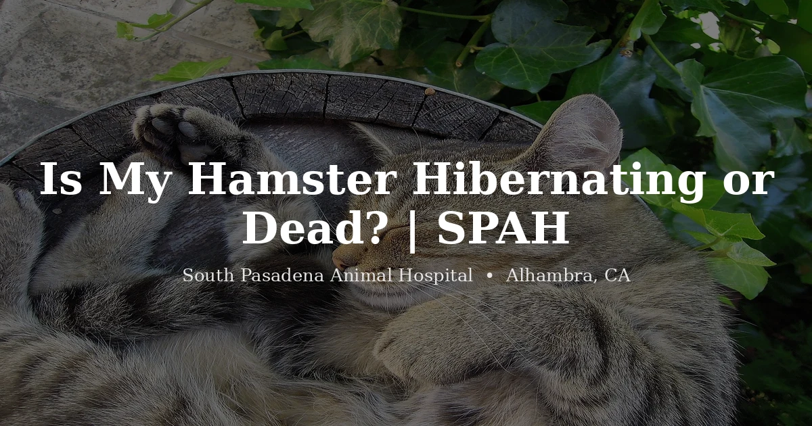

October 14, 2026 · 6 min read
Is My Hamster Hibernating or Dead?

This is one of the most frightening moments a small-pet owner can have: you find your hamster cold, curled tight, and completely still, and your stomach drops because you're sure it's gone. Before you grieve, take a breath and read this carefully, because there's a real chance your hamster isn't dead at all. It may be in torpor, a hibernation-like state triggered by cold, and if that's what's happening, what you do in the next little while matters.
Let's walk through how to tell, and what to do.
What's actually happening
People call it hibernation, but that word oversells it. A pet hamster dropping into torpor isn't settling in for a cozy planned winter nap the way a bear does. It's the body's emergency response to getting too cold. Metabolism, breathing, and heart rate all slow to a crawl to conserve energy and survive. It usually kicks in when the room drops below about 60°F, sometimes nudged along by short winter daylight. A hamster that's kept consistently warm simply won't do this. So torpor is really a sign that something in the environment went wrong, not a healthy event. If your hamster has been off lately, review the other signs of a sick hamster.
Hibernating or dead? How to tell the difference
This is the question you came here for, so slow down and check carefully. It's easy to get wrong in a panic.
- Breathing. A hamster in torpor is still breathing, just incredibly slowly, perhaps one shallow breath every few seconds, or even longer. Watch the body closely for a full two minutes in good light. A hamster that has died won't breathe at all.
- The body. In torpor, the body stays soft and limber, and often feels cool but not icy. After death, the body goes limp and then gradually stiffens over a few hours.
- Tiny signs of life. You might catch a faint whisker twitch, a small movement if you gently touch a paw, or feel a very slow heartbeat if you cup your hand around the chest.
Here's the safe rule when you're not sure: assume torpor and start warming. Gently warming a hamster that has sadly already passed does no harm, but failing to warm one that's in torpor could cost it its life.
How to warm your hamster safely
The key word is gradual. Sudden, intense heat is dangerous. This is not the moment for a heating pad on high, hot water, or a hair dryer. Instead:
- Move the hamster and its enclosure into a warm room.
- Provide gentle, indirect body heat. Cup the hamster in your hands, or hold it against your body through a towel or your shirt.
- Give it quiet and time. Rousing from torpor commonly takes anywhere from about 30 minutes to a couple of hours, and you should see the hamster slowly begin to stir, breathe more noticeably, and move.
Once it's up, offer a little food and water, since a hamster that got cold enough to enter torpor may also be low on energy.
Why this happened, and preventing a repeat
Torpor almost always traces back to cold: a chilly room, a draft from a window, the heat clicking off overnight, or the enclosure sitting somewhere that gets colder than you realized. Illness, or not enough food and water, can make a hamster more vulnerable to it. The fix is simple but important. Keep the enclosure in a warm, draft-free spot that stays reliably above about 65°F, away from exterior windows and vents.
When to reach out to a vet
We'd want to hear from you if your hamster:
- Went into torpor at all. It's worth a check-up, because it signals an environment or health problem and the hamster may need support
- Isn't rousing after a couple of hours of gentle, steady warming
- Wakes but stays weak, wobbly, cold, or won't eat or drink
- Has been having repeated episodes
We see hamsters and other small pets at our hamster vet in Alhambra. For the broader picture of what to watch for, our guides to signs a hamster is sick and common hamster health problems are good companions, and our pricing page explains what a visit involves.
Frequently Asked Questions
Do pet hamsters hibernate?
Not in the planned way wild animals do. Pet hamsters can drop into a hibernation-like state called torpor when they get too cold, usually below about 60°F. It's the body shutting down to survive the cold, not a healthy event, and it can be dangerous. A consistently warm hamster won't go into torpor.
How can I tell if my hamster is hibernating or dead?
Look and feel closely. In torpor a hamster still breathes, very slowly and shallowly, and its body stays soft and limber; you may see a whisker twitch or feel a faint heartbeat. A hamster that has died won't breathe at all and gradually stiffens. If unsure, assume torpor and start gently warming while you contact a vet.
How do I safely warm a hamster out of torpor?
Warm it gradually, never suddenly. Move it to a warm room and give gentle, indirect heat. Cupping it in your hands or holding it close through a towel. Avoid heating pads on high, hot water, or hair dryers. It usually takes 30 minutes to a couple of hours to stir. Contact a vet, since torpor signals something went wrong.
Why did my hamster go into torpor?
Almost always because it got too cold. A chilly room, a draft, or an overnight temperature drop, sometimes with short winter daylight. Illness or too little food and water increase the risk. Keeping the enclosure warm, draft-free, and reliably above about 65°F prevents it.